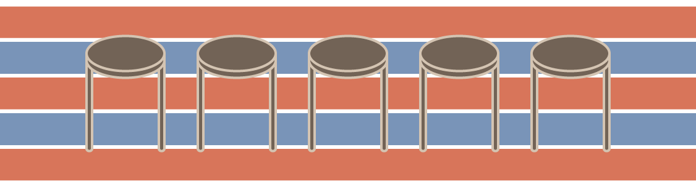

「辦桌」是一種在自宅或私人場所辦理筵席宴請賓客的活動。臺灣民間每逢婚喪喜慶、新居入厝、彌月慶生、尾牙春酒、廟會慶典、地方選舉等，常在自宅馬路邊、寺廟廣場、學校操場或地方活動中心為場地，現場搭建棚架，擺起爐灶桌檯、圓桌與餐椅，搭配霓虹閃閃的舞臺，與賓客一起同樂、共享美食。

早期辦桌
臺灣辦桌的形式隨時代而改變，早期農村的辦桌活動往往是左鄰右舍總動員，由擅長廚藝的能手負責開菜單、料理菜餚，主人家提供食材、爐灶與柴火等，不夠的食器、桌椅等設備還會從鄰居家調借，洗菜、切菜、端菜等各種準備工作也嘗試主客分工。

中後期辦桌
清代以降，除了由自家人準備酒菜外，也常聘請廚師到府辦理筵席。到了日本時代，隨著都市發展、酒樓林立，「臺灣料理」馳名，除了開始出現在餐館宴客的活動外，城市裡也有些酒樓業者包辦到府筵席。一直到民國五Ｏ年代之後，辦桌才開始逐漸朝商業化發展，許多經典臺菜料理，即源自於辦桌文化。戰後初期物資缺乏，辦桌菜色以「呷飽」為主要目的；六Ｏ年代以後，則以「呷好、呷巧」為特色，講求美味、精緻、獨特；九Ｏ年代起，則隨著健康養生風潮走向「呷健康」的原則，也融入異國多元化食材和風味。
參考資料：好好吃—臺灣飲食文化特展